Oran Nam Fineachan Gaidhealach
le Alasdair MacMhaighstir Alasdair
The Song of the Gaelic Clans - Chant des Clans des Highlands
A gathering song - Chant de rassemblement
By/par Alexander McDonald
Source:"Bliadh Na Theàrlaich" by John McKenzie (1844)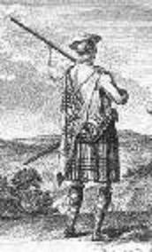
Tune - Mélodie
"Wa(ul)king of the Faulds"
Version 2
Version 3
Sequenced by Ch.Souchon
Version 4
Sung by Duncan McDonald (1882-1954), stonemason in Penerine, South Uist.
,
Recorded by John Lorne Campbell on 17th Febr. 1950.
Sheet music
{kind=link}
About the tune - A propos de la mélodie
|
According to John McKenzie, editor of the song collection "Sàr-Obair nam Bard Gaelach", Glasgow 1865), the following poem was sung to the tune
"The Waulking of the Faulds"
.
In spite of its strong rhythm and its title, this melody is not a "waulking song" as it lacks the typical burden including onomatopoeia (cf. the song Morag ). In the present case, ‘Waulking of the Faulds’ refers to the shepherd’s task of watching the sheep fold at the time of weaning lambs to prevent them from returning to their mothers. This necessitated shepherds staying awake all night and occasioned an opportunity for socializing and playing to alleviate boredom. As directed by Allan Ramsay , in his ballad opera "The Gentle Shepherd" (1725), the first song "My Peggy is a young thing, just entered in her teens" should be sung to this air, lending credence to the title relating to a shepherd’s task. This song seems to have been first published in the second edition of Orpheus Caledonius (1725), while other early appearances are in the c. 1740 MacFarlane Manuscripts (where it is titled “Wakin of the Falds”), and in David Herd's "Ancient and Modern Scottish Songs", 1769 or 1776, ("The Wauking of the Faulds"). You are listening to the version noted in Burns and Johnson's "Scots Musical Museum" (1853 edition -Volume I song 87). It is a pentatonic melody (somewhat like Chinese music!) missing out the notes B and E. The verse 1 reads thus: ' My Peggy is a young thing, just enter'd in her teens, Fair as the day, and sweet as may, Fair as the day, and always gay; my Peggy is a young thing, and I'm not very auld; yet well I like to meet her, at the wawking of the fauld . My Peggy speaks sae sweetly, whene'er we meet alane, I wish nae mair, to lay my care, I wish nae mair of a' that's rare; my Peggy speaks sae sweetly, to a' the lave I'm cauld; But she gars a' my spirits glow, at wawking of the fauld .' |
John McKenzie, dans son recueil de chants "Sàr-Obair nam Bard Gaelach", Glasgow 1865), indique que le poème qu'on va lire se chantait sur la mélodie
"The Waulking of the Faulds"
.
Malgré son rythme appuyé et son titre sibyllin, la présente mélodie n'est pas un "waulking song" (cf. le chant Morag ), car il est dépourvu du refrain typique comportant des onomatopées. Dans le cas présent, ‘Waulking of the Faulds’ (to wake =veiller, fold=bercail) désigne le fait pour des bergers de surveiller un bercail pendant la période du sevrage pour empêcher les agneaux de venir retrouver leurs mères. Il leur fallait pour cela veiller toute la nuit, ce leur fournissait le prétexte à des activités ludiques propres à dissiper leur ennui. Cet air est désigné par Allan Ramsay dans son opérette "The Gentle Shepherd" (1725) pour accompagner le poème "Ma Peggy est toute jeune, elle a tout juste treize ans", corroborant ainsi cette interprétation du titre. Il semble que la mélodie ait été publiée pour la première fois dans la 2ème édition de l'" Orpheus Caledonius (1725), puis elle apparaît dans les "manuscrits MacFarlane" vers 1740 (sous le titre “Wakin of the Falds”) et chez David Herd, dans ses "Chants écossais, anciens et modernes", 1769 ou 1776, ("The Wauking of the Faulds") Vous entendez la version notée dans le "Musée Musical Ecossais" de Burns et Johnson's (édition de 1853 -Volume I chant N° 87). C'est une mélodie pentatonique (aux allures chinoises!) qui n'utilise ni le mi ni le si. En voici la première strophe: ' Ma Peggy n'est qu'une enfant, Elle a tout juste treize ans, Toute belle et toute charmante, Toute belle et toujours riante; Peggy est jeune en effet, Et moi guère plus âgé; Mais j'aime en sa compagnie, Monter la garde aux brebis . Ses discours pleins de douceur S'adressent à moi seul, Comme remède à mes chagrins, Je ne recherche d'autre bien; Ses discours pleins de douceur, Moi qui ne suis que froideur, Ils me remplissent d'ardeur, Pendant la garde aux brebis .' |

|
1. Beloved loyal people [1]
Now your true homage give, Let your eyes be moteless, Your hearts be true and fearless; The health of King James Stewart, Full gladly pass it round! But if within you fault is hidden Soil not the holy cup. Fill a toast for Charlie Thou rascal! fill it full! 'Twere an elixir splendid Reviving my whole nature, Though I were at death's door, And strengthless, cheerless, pale - The God of Elements speed thy navy To us o'er the seas! 2. O, raise aloft thy sail tops Secure, fine, snow-white, new, To thy mighty mast of pine-wood To cross the murmuring ocean; Æolus does promise A steady breeze from eastward To blow, and loyal Neptune Will sooth the foaming seas. Unhappy are thy friends here Since thou'rt so long away; Like tender brood unmothered, Or speckled garden hivebees, Which the fox has ravaged, Exhausted o'er the braes; Cross thou quickly with thy fleet And heal thy people's plague. 3. The gods are in thy favour, Make haste with lovely speed O'er th' dark-blue, surging waters Rough-ridgèd, curling, restless, Deep-valleyed, white-topped, close-run, Of the rough, clear-backed sea-waves; The deep, dark, gloomy se-glens On their curving, stormy way. Both land and sea are friendly, If you mar not their hope; Hundreds will pour forward Round thy white and crimson banner [2] From Britain and from Ireland In valiant, sturdy bands; A regal, wounding, active, wrathful, Dang'rous, reckless band. 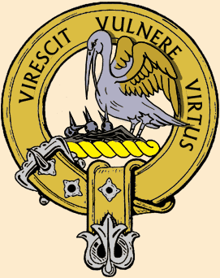 4. Thy own clan will join thee, [3] The warriors bold and fierce, Who are like bears for rending, Like lions too for wounding, Like serpents swiftly striking With fangs that keenly pierce; With sharp-edged, cleaving darts of steel Great feats of arms they'll do. Then with their flowing banners, With unaffected zeal, Clan Donald quickly follows, As faithful as thy raiment, Like hounds their leashes straining, A-tremble for the hunt; Pity the foes they show the ling Ship, lion, tree, red hand. [4] 5. The Campbell clan will surely Bring strength into thy camp; Their chief, Argyll , will lead them, Majestic, princely, joyous, Whoever dares meet them Will start a bitter fray, With keen dark-blue destroying swords That bodies hew in twain. Abundantly, with war-cries loud, And clam'rous in their ranks, 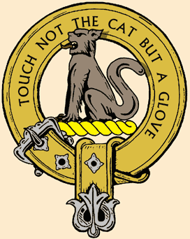 Will Cluny and Clan Vurich come, Handsome, skilled and ready they, With tightly-girt Toledo blades Which whirr loud spitting skulls; Their quick sword-play will soon shed blood And smash their foemen's bones. 6. The Clan MacLean will closely draw Unyielding 'neath they flag; Whose arms are ne'er allowed to rust When they are needed in thy cause, With banners high, and looks of rage, In war like fearless bulls; A manly, vengeful, ready, smiting, Valiant, proud brigade. The heroes of MacLeod will come Like hawks that grip their prey; Like mighty pillars, with their swords, Unhesitating, well prepared, A regiment of training rare, Which dreadful 'tis to meet; With many a mighty hero cruel, Who'll stormlike go to death. 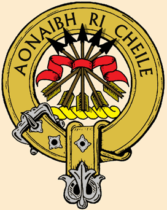 7. The warriors of Clan Cameron Will gladly join the fray, The wounding, shouting company, Who fearless are when swords are drawn, Whose blue blades flash like lightning-flame To sever heads and hands; As granite hard, and meteor swift, The crunch of bones is heard. The heroes of Clan Iain will come Obedient to thy camp, Like forest fires on mountain-side Which winds of March are sweeping wide Or men who bridled horses ride Down-charging undelayed; As quickly as gunpowder fires When to it spark is placed. 8. And certainly will join with thee MacKenzie of Kintail, Men mighty, daring, elegant As true steel after tempering, Who ne'er showed fear of negligence Nor flinched 'neath gunfire's hail; A modest, handsome, valiant band Who burn thy cause to aid. Proudly, fine, well ordered, 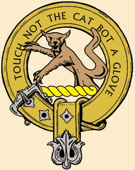 Clan Mackintosh will come, Who march both smooth and stately, With pipes and yellow banners; On whom is regal glory Ungrudgingly bestowed; Mighty, sturdy, reckless men With neither fault nor guile. 9. Noisily the Grants will come, And quickly to thy camp, A-fire with passion for the fray To cleave foes' heads and ears away, As deadly as the tiger they, In keen and daring bands, Who many a man will smite to earth Screaming and kicking there. Then will come the Frasers, trim And filled with mighty strength; As falcons bright and ready they, Unmoved by dread in battle's height, A manly, warlike regiment, Pity whom meets their wrath; Their gunflints, from their fire so close Will be like glowing coals. 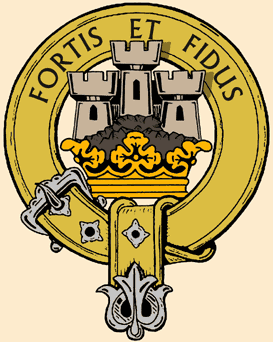 10. A valiant, active company Clan Lachlan quickly comes Like red and fiery poisoned darts, With swords and shields and daggers armed, With gun and pistol well practised, No count take they of war; Charging on against the showers Of their foemen's lead . Clan Kinnon will join in thy fight, Superb in quality, Like waves e'er beating on the shore, Or lambent flames that keenly scorch, In ever-charging, speeding bands Burning their foes to ash; The warriors from Mull and Strath Well can they sever limbs. 11. Many will the spoilers be Of corpses on the field, Ravens will be cawing there, Fluttering, and sauntering, Kites a-feeding rav'nously To eat and drink their fill; O, sad and faint at morn will rise The cries of those who fell. Blood and gore will mingled be By your dext'rous hands, Heads and fists will be lopped off, Bones broken, and joints hacked apart, Your foemen will be overwhelmed, Fire-blackened, and consumed; Charles Stewart with glory will be crowned, Prince Frederick [5] trampled down Translated by John Lorne Campbell in "Highland Songs of the '45" (1932) |
1. A chomuinn rìoghail rùnaich [1]
Sàr-ùmhlachd thugaibh uaibh, Biodh ur roisg gun smùirnein, 'S gach cridh' gun treas gin lùib ann; Deoch-slàinte Sheumais Stiùbhairt Gu mùirneach cuir mu'n cuairt! Ach ma ta giamh air bith 'nur stamaig, A' chailis naomh na truaill. Lìon deoch-slàinte Theàrlaich, A mheirlich! stràic a' chuach! B'ì siod an ìocshlàint' àluinn Dh'ath-bheòthaicheadh mo chàileachd, Ged a bhiodh am bàs orm, Gun neart, gun àgh, gun tuar - Rìgh nan dùl a chur do chàbhlaich Oirnn thar sàl ri luas! 2. O, tog do bhaideil arda, Chaol, dhìonach, shàr-gheal, nuadh, Ri d' chrainnghridh bìgh-dhearg, làidir, Gu taisdeal nan tonn gàireach; Tha Æolus ag ràitinn Gun sèid e ràp-ghaoth chruaidh O'n àird anear, 's tha Neptun dìleas Gu mìneachadh a' chuain. Is bochd atà do chàirdean Aig ro-mheud t'fhardail uainn, Mar àlach maoth gun mhàthair, No beachainn bhreac a' ghàraidh Aig sionnach 'n d'èis am fàsaichth' Air fàillinn feadh nam bruach; Aisig cabhagach le do chàbhlach, Us leighis plàigh do shluaigh. 3. Tha na dèe ann an deagh-rùn duit, Greas ort le sùrd neo-mharbh Thar dhronnag nan tonn dubh-ghorm, Dhriom-robach, bhàrr-chas, shiùbhlach, Ghleann-chladhach, cheann-gheal, shùgh-dhlùth, Nam mòthar cùl-ghlas, garbh; Na cuan-choirean greannach, stuadh-thorrach, 'S crom-bhileach, molach, falbh. Tha muir us tìr cho rèidh dhuit Mur dean thu fèin an searg'; Dòirtidh iad 'nan ceudaibh, 'Nan laomaibh tiugha, treuna, A Breatuinn us a h-Eirinn Mu d' standard brèid-gheal, dearg; A' ghaisreadh sgaiteach, ghuineach, rìoghail, Chreuchdach, fhìor-luath, gharg. 4. Thig do chinneadh fèin ort, Na treun-fhir laomsgair, gharbh, 'Nam beathraichibh gu reubadh, 'Nan leòmhannaibh gu creuchdadh, 'Nan nathraichibh grad-leumnach, A lotas geur le 'n calg; Le 'n gathaibh faobharach, rinn-bheurra Nì mòr-euchd le 'n arm'. 'Nam brataichibh làn-èidicht' Le dealas geur gun chealg, 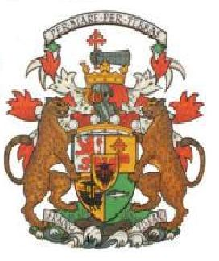 Thig Domhnullaich 'nan dèidh sin, Cho dìleas duit ri d' lèine, Mar choin air fasdadh èille Air chath chrith geur gu sealg; 'S mairg nàimhde do 'n nochd iad fraoch, Long, leòmhann, craobh, 's làmh dhearg. 5. Gun neartaich iad do champa Na Caimbeulaich gu dearbh, An Diùc Earraghàidhealach mar cheann orr', Gu mòralach, mear, prionnsail, Ge b'è sid an tionnsgnadh searbh, B'è sid an tionnsgnadh searbh, Le lannaibh lotach, dubh-ghorm, toirteil, Sgoltadh chorp gu'm balg. Gu tairbeartach, glan, caismeachdach, Fìor-thartarach 'nan ranc, Thig Cluainidh le 'chuid Phearsanach, Gu cuanna, gleusda, grad-bheirteach, Le spàinnichibh teann-bheirticht' 'S cruaidh fead ri sgailceadh cheann; Bidh fuil da dòrtadh, smùis da spealtadh, Le sgealpaireachd ur lann. 6. Druididh suas ri d' mheirghe, Nach meirbh an am an àir, 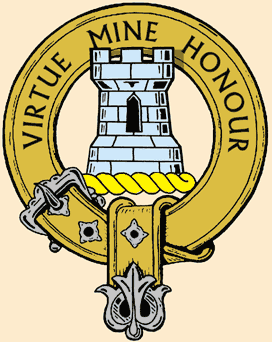 Clann Ghill' Eathain nach meirgich Airm ri h-uchd do sheirbhis, Le 'm brataichean 's snuadh feirg' orr', 'San leirg mar thairbh gun sgàth; Am foirne fearail, nimheil, arrail, As builleach, ealamh làmh. Gun tig na fiùrain Leòdach ort Mar sheochdain 's eòin fo 'n spàig; 'Nan tùiribh lann-ghorm, tinnisneach, Air chorra-ghleus gun tiomachas, An rèisimeid fhìor-innealta, 'S fàth giorraig dol 'na dàil; Am bi iomadh bòcan fuilteach, foirmeil, Thèid le stoirm gu bàs. 7.Thig curaidhnean Chlann-Chamshroin ort, Thèid meanmnach sìos 'nad spàirn; An fhoireann ghuineach, chaithreamach, 'S neo-fhiamhach an am tarruinge, An lainn ghlas mar lasair dealanaich Gu gearradh cheann us làmh; 'S mar luas na dreige, 's cruas na creige, Chluinnte sgread nan cnàmh. 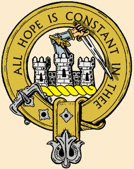 Thig mìlidhean Chlann-Iain ort, Thèid fritheilteach gu d' champ, Mar fhaloisg ris na sliabh-chnuic Us gaoth a' Mhàirt 'ga biathadh, No marcaich' air each srianach A rachadh sìos gun chàird - Cho ealamh ris an fhùdar ullamh, An t-srad 'n uair bhuineadh dhà. 8. Gur cinnteach dhuibh d'ur coinneachadh Mac Coinnich mòr Cheann-t-sàil', Fir làidir, dhàna, cho innealta Do'n fhìor-chruaidh air a foinneachadh, Nach ghabh fiamh no somaltachd No sgreamh roimh theine bhlàr; 'S iad gu nàrach, fuileach, foinnidh, Air bhoil' gu dol 'nad chàs. Gur foirmeil, pròiseil, ordail, Thig Tòisichean 'nan ranc, A' màrsal stàtail, comhnard, Gu pìobach, bratach, sròl-bhuidh'; Tha rìoghaltachd us mòrchuis Gun sòradh anns an dream, Daoine làidir, neartmhor, cròdha, 'S iad gun ghò, gun mheang. 
9. Thig Granndaich gu ro-thartarach, Neo-fhad-bheirteach do d' champ, Air phriob-losgadh gu cruadal, Gu snaidh' cheann us chluas diubh, Cho nimheil ris na tigiribh, Le feachdraidh dian-mhear, dàn', Chuireas iomadh fear le sgreadail 'S a' breabadaich gu làr. Thig a rìs na Frisealaich Gu sgibidh le neart garbh, 'Nan seochdaibh fìor-ghlan, togarrach, Le fuathas bhlàr nach bogaichear, An comhlan feardha, cosgarrach, 'S mairg neach do 'n nochd iad fearg; An spuir ghlas aig dlùths an dèirich Bidh 'nan èibhlibh dearg. 10.'Nan gaisreadh ghaisgeil, losgarra, Thig Lachlunnaich gun chàird, 'Nan soighdibh dearga, puinnseanta, Gu claidhmheach, sgiathach, cuinnsearach, Gu gunnach, dagach, ionnsaichte, Gun chunntas ac' air àr; Dol 'nan deannaibh 'n aodainn pheileir Tiochd o theine chàich. Gabhaidh pàirt de t' iorghaill-sa 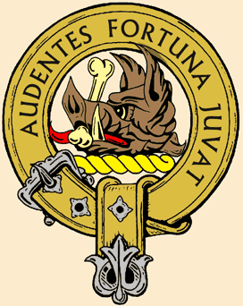 Clann-Fhionghain 's sìor-bhualadh, Mar thuinn ri tìr a' sìor-bhualadh, No bile lasrach dian-losgadh, 'Nan treudaibh luatha, sìor-chonfach, Thoirt grìosaich air an nàmh'; An dream chathach, Mhuileach, Shrathach, 'S maith gu sgathadh chnàmh! 11. 'S mòr a bhios ri corp-rùsgadh Nan closaichean 'sa bhlàr, Fithich ann, a' rocadaich, Ag itealaich, 's a' cnocaireachd, Cìocras air na cosgarraich Ag òl 's ag ith' an sàth; Och, 's tùrsach, fann, a chluinntear mochthrath, Ochanaich nan àr. Bidh fuil us gaorr dam fùidreadh ann Le lùth-chleasan ur làmh, Meangar cinn us dùirn diubh, Gearrar uilt le smùisreadh, Cìosnaichear ur biùthaidh, Dan dubh-losgadh, 's dan cnàmh'; Crùnar le poimp Tearlach Stiùbhart, Us Frederic Prionns'(***) fo shàil. |
1. Chers et loyaux amis, [1]
Rendons hommage aujourd'hui, Nous regardant droit dans les yeux, En hommes francs et courageux, A Jacques, le Souverain. Que passe de main en main Cette sainte coupe si rien Ne vient ternir vos consciences. Un toast à Charlie, Verse à raz bord, je te prie! Car seul cet élixir, je le pense Peut m'apporter la jouvence, Au seuil de la mort, Faible, hélas et sans ressort. Le vent conduise à bon port Tes nefs depuis la France! 2. Déploie donc ta grand-voile, La blanche et solide toile, Le long du mat de pin puissant Traverse les flots mugissants; Eole en fait la promesse: Un vent constant vient de l'est. Et l'on voit le loyal Neptune Apaiser l'onde et l' écume. Tes amis se morfondent, Ils comptent chaque seconde; Comme une portée sans sa mère, Ou bien des abeilles qui errent, Quand leur ruche est ravagée, Eperdues parmi les prés; Toi, Prince et ta flotte, venez Apaiser nos misères. 3. Les dieux sont favorables, Presse-toi donc, sois aimable, D'affronter enfin les flots bleus Agités et tumultueux, Que creuse et que blanchit la houle Vagues en mouvante foule; Nos fjords si profonds et ombreux Avec leur parcours sinueux Sont rives accueillantes, Réponds donc à notre attente; Et par centaines nous viendrons Sous ton blanc et rouge fanion [2] De la grande île et d'Irlande. Rudes et vaillantes bandes, De valeureux guerriers t'attendent; De nobles compagnons. 4.D'abord, ceux de ton Clan, [3] Guerriers féroces, vaillants. Ce sont des ours s'ils s'acharnent, Des lions, s'ils sont pleins de hargne, Piquant comme des serpents Armés de crochets perçants; Leurs flèches d'acier acérées Sont connues pour leurs hauts faits. Puis, bannières au vent, Et impétueusement, Vois le Clan Donald qui te suit. Il colle à toi comme un habit. On peine à le maîtriser, Comme à la chasse un limier; On tremble en voyant la Brande, Lion, Arbre, Main rouge, Esquif. [3] 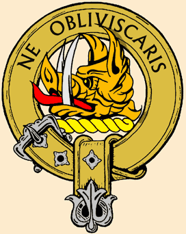 5. Les Campbells, c'est certain, Viendront tous se joindre aux tiens; Avec leur Chef, Argyll , à leur tête, Majestueux, le coeur en fête. Et quiconque les affronte Connaîtra la peur, la honte, Car leurs épées d'acier trempé Coupent les corps par moitiés. Mais hurlant leurs slogans, Vois venir, serrant les rangs, Cluny et le Clan McPherson, De vaillants et d'habiles hommes, Dont des lames de Tolède Sifflent en coupant les têtes; C'est un bain de sang qui s'apprête Et un massacre énorme. 6. Les McLean aussitôt Approchent sous leur drapeau; Ils ferraillent sans relâche Pour mener à bien leur tâche, Hargneux, sous leurs étendards, Ce sont de rudes gaillards. Tout comme les estocades, Portées par cette brigade. 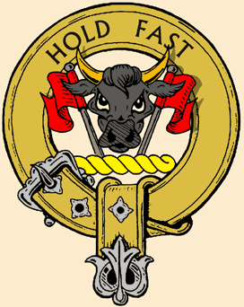 C'est les McLeod qu'on voit S'abattre ainsi sur leurs proies; Leurs épées sont de vrais piliers, Ils sont sûrs d'eux, ils sont fins prêts, Rares sont les régiments, Ayant cet entraînement; Car eux, ils furent tant et tant, A voir la mort de près. 7. Puis le Clan Cameron Nous rejoindra, me dit-on. C'est une bande de braillards, Oui, mais, sabre au clair, quels gaillards!, Voyez comme ils étincellent Coupant les mains, les cervelles; Pesants, mais vifs comme l'éclair. Que d'ossements ils broyèrent! McDonald de Glencoe: Encore un clan de héros, On dirait des feux de forêt Qu'un vent violent a propagés. Cavaliers, bride abattue, Qu'on voit charger, éperdus; La poudre à canon n'est pas plus Prompte à se consumer. 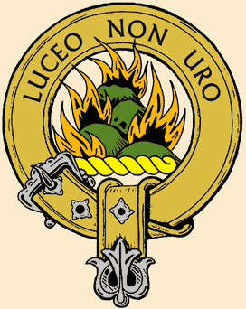 8. Viendra sans doute aussi Le fameux clan McKenzie De Kintail, ces guerriers puissants, Tels l'acier trempé, résistants, Ils sont braves, consciencieux. Ne craignent ni fer, ni feu; Un groupe modeste et zélé Qui brûle de t'assister. En bon ordre s'approche, Le grand Clan des Mackintosh, Regardez leur allure altière, Et leurs sonneurs et leurs bannières; Eux, c'est à pleines brassées Qu'ils récoltent leurs lauriers; Guerriers puissants et décidés Fuyant les manigances. 9. Entends le Clan des Grants, Qui vient rejoindre ton camp, La passion qui les enflamme: C'est de pourfendre l'infâme, Plus dangereux que des lions, Vont être leurs bataillons, Plus d'un finira terrassé Sous leurs cris, leurs coups de pieds. 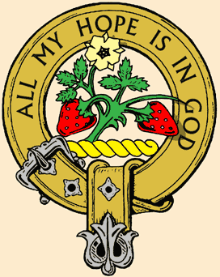 C'est le tour des Frasers Tout pleins d'une mâle ardeur; Des faucons calmes et sereins, Lorsque le combat bat son plein. Un régiment fort aguerri Et malheur à qui l'oublie; A bout portant, leurs longs fusils Sont des charbons ardents. 10. Vaillante compagnie, Le Clan McLachlan surgit: Comme des traits empoisonnés. Armés d'épées, de boucliers, Maniant pistolets, fusils. Vois, de la guerre ils se rient, Chargeant en dépit de l'averse De la mitraille adverse! Le Clan Kinnon voudra Prendre sa part au combat. Ils sont le ressac sur la rive, Ou le feu que la brise attise: Toujours de nouvelles charges, Toujours de nouveaux carnages. Ces guerriers d'entre Mull et Strath Taillent dans la chair vive. 11. Beaucoup de détrousseurs De cadavres au champ d'honneur! Que de corbeaux entendra-t-on Coasser, en faisant des bonds! Et de féroces milans Paître et boire goulûment? L'aube entendra les faibles râles De ces blessés par balles. Des doigts experts viendront Mélanger la chair au sang. Têtes et poings seront tranchés, Os brisés, jointures coupées, Tes ennemis écrasés, Carbonisés, consumés! Charles Stuart sera couronné! Frédéric [4], terrassé!
(Trad. Ch.Souchon(c)2004)
|
|
[1] This poem pre-dates the Rising of 1745 and was an
attempt to inspire reluctant clans to rally Bonnie Prince Charlie's cause
, expecting his eventual arrival.
In fact, the Campbells, Grants , MacLeods and MacKenzies of Kintail, although mentioned in this poem, fought for the Hanoverian Government forces. However, there were a few small numbers of these clans fighting along with the Jacobites: Grants of Glen Moriston; MacKenzie's of Kintail , raised by Lady Fortrose; MacLeods of Bernera, Muiravonside, Raasa, Glendale and Brea; and perhaps a handful of scattered Campbells. [2] According to Robert Chambers (History of the rebellion in Scotland 1745-1746, Edinburgh 1869),this banner was 'of red silk with a white space in the centre'. (See painting by W. Skeoch Cumming: to "The Raising of the Standard at Glenfinnan"). [3] The badge of the McDonalds is the heather, and the arms of Clanranald are described in the last line of the stanza. (See 1st thumbnail in 2nd column). [4] Clicking the button "Clans" opens a page giving an estimate of the Jacobite forces in the 1745 rising. See also the table on page "The Standard of Braemar , as well as the table below.. [5] The Prince Frederick , mentioned in the last stanza, was the Prince of Wales, father of George III. Pictures of crests:http://www.scotclans.com/index.html (cf: links). |
[1] Ce poème est antérieur au soulèvement de 1745 et était destiné à
inciter les clans hésitants à embrasser la cause du Prince Charles
dont on attendait l'arrivée.
En réalité, les Campbell, Grant, MacLeod et MacKenzie de Kintail, bien que cités dans ce poème, combattirent dans les forces gouvernementales hanovriennes. Toutefois, il y eut quelques éléments clairsemés de ces clans qui combattirent avec les Jacobites: les Grant du Glen Moriston; les MacKenzie de Kintail , enrolés par Lady Fortrose; les MacLeod de Bernera, Muiravonside, Raasa, Glendale et Brea; et peut-être aussi, des Campbell de diverses régions. [2] Selon Robert Chancers (Histoire de la rébellion écossaise 1745-1746, Edimbourg 1869), cette bannière était 'de soie rouge avec un milieu blanc'. (Cf. le tableau de W. Skeoch Cumming "La levée de l'étendard à Glenfinnan" ) [3] L'insigne des McDonald est la brande (fougère). Les armes de Clanranald sont décrites par la dernière ligne de la strophe (cf la 1ère vignette de la 2ème colonne). [4] En cliquant sur le bouton "Clans" on accède à une estimation des forces Jacobites au cours du soulèvement de 1745. Cf. aussi "L'étendard de Braemar , ainsi que le tableau ci-après. [5] Le Prince Frédéric de la dernière strophe, est le Prince de Galles, père du futur George III. Images de crests(insignes): http://www.scotclans.com/index.html (cf:liens) |
| Rallied Clans listed in the song "Oran Nam Fineachan Gaidhealach" | |||||
|---|---|---|---|---|---|
| Stanza | Clans | Date | Place | Leader | Strength |
|
4a
4b 4b 4b 5b 6a 6b 7a 7b 8a 8b 9a 9a 9b 10a 10b |
Stewart
Mc Donald: Clanranald McDonald of Keppoch McDonald of Glengarry McPherson McLean McLeod (Bernera, Muiravon, Paasa, Glendale, Brea) Cameron McDonald of Glencoe (Clan Iain) McKenzie of Kintail McKintosh of McKintosh Grant of Glen Moriston Grant of Grant Frasers McLachlan McKinnon |
28.08.1745
19.08.1745 19.08.1745 27.08.1745 30.10.1745 - - 30.08.1745 27.08.1745 - - 20.09.1745 - end 1745 18.09.1745 14.10.1745 |
Invergarry
Glenfinnan Glenfinnan Aberchalder Dalkeith Stirling - Glenfinnan Aberchalder - - Prestonpans - - Edinburgh Edinburgh |
Stewart of Ardshiel
Morar Keppoch Angus, Glengarry's 2nd son Cluny (Ewan McPherson of) McLean of Drimnin (brigaded with the McLachlans at Culloden) (Chief McL aided governt) Lochiel (150 were sent back on 30th August, as imperfectly armed). - By Lady Fertrose (Lord Fortrose aided govt with most of the clan) Mc Gillivray of Drumnaglass (troops raised by Lady McK) - Chief aided governt Master of Lovat McLachlan of McLachlan McKinnon of McKinnon |
260
150 300 400 400 500 - 700 120 few 800 100 - - 150 120 |
Table summing up the notes 2 to 16 in J.L. Campbell's "Highland Songs of the'45"
His source are the Publications of the Scottish History Society, 1886, Edinburgh.
|
des chants étudiés dans ELF JAKOBITENLIEDER IN GÄLISCHER SPRACHE un essai en allemand au format LIVRE DE POCHE 
de Christian Souchon |
zu der Abhandlung ELF JAKOBITENLIEDER IN GÄLISCHER SPRACHE einem deutschsprachigen TASCHENBUCH
von Christian Souchon |
is one of the songs studied in ELF JAKOBITENLIEDER IN GÄLISCHER SPRACHE presented in German as a PAPERBACK BOOK
by Christian Souchon |
Cliquer sur le lien ou l'image - Klicke auf den Link oder auf das Bild - Click link or picture for more info